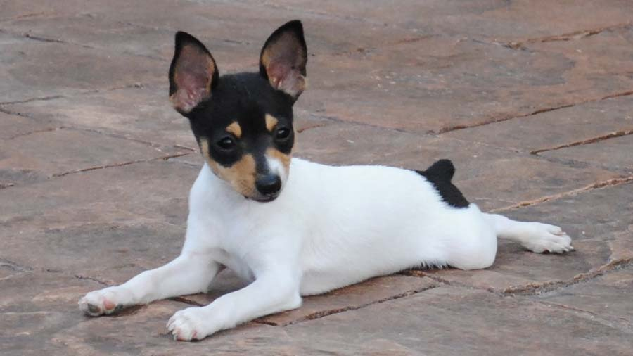
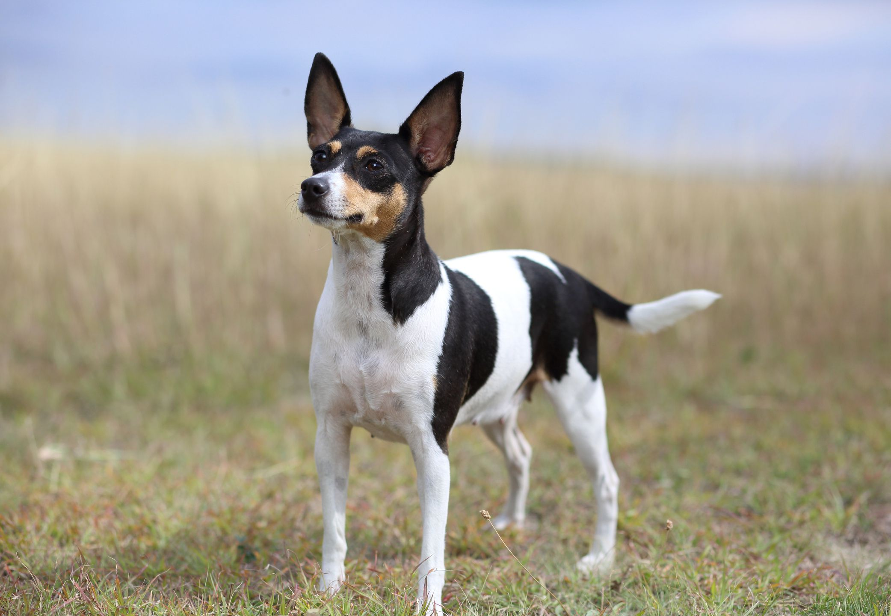
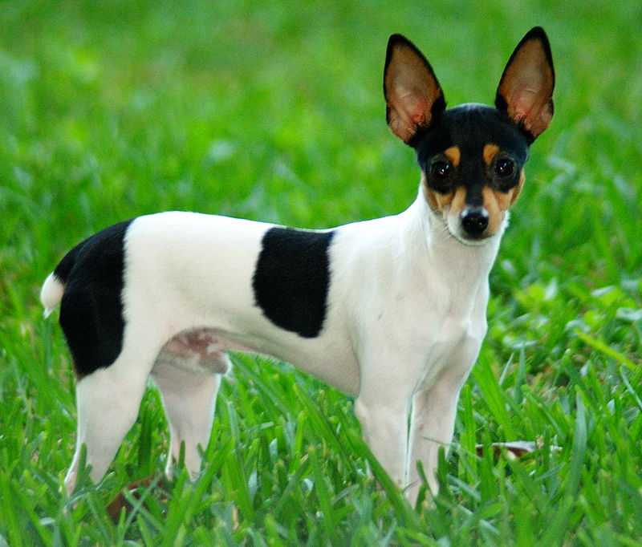

Toy Fox Terrier

origin
United States
size
Smallest
color
White
type
Purebred
breed group
Toy (AKC:2003), Terriers (UKC)
character
Fluffy
temperament
Alert
Charming
Confident
Loyal
height
10 inches (25 cm)
weight
3.5-7 pounds (1.5-3 kg)
geography
North America
overview
The Toy Fox Terrier has all the same traits that make the Smooth Fox Terrier such a successful hunter -- just in a diminutive package. This is an athletic, agile and graceful dog with surprising strength and the stamina to frolic all day. The gait is smooth and effortless. The coat is short and smooth, perfect for caressing.
history
The Toy Fox Terrier is an American breed descending from the first registered Smooth Fox Terrier, named ‘Foiler’. Fox Terriers were bred for fox bolting (chasing foxes out into the open where they could be attacked by larger dogs); white was preferred to distinguish the dogs from foxes at night. The Fox Terrier was one of the earliest show dogs, recognized by the American Kennel Club in 1885 (the Smooth Fox Terrier and Wire Fox Terrier were recognized as distinct breeds a century later).
Toy Fox Terriers were bred from their larger cousins by American farmers who favored the shorter variety for chasing rodents. Toy Fox Terriers were crossed with other breeds such as the Chihuahua and Manchester Terrier for a smaller size and slightly calmer temperament. The Toy Fox Terrier was recognized as a distinct breed by the American Kennel Club in 2003.
Photo Gallery

